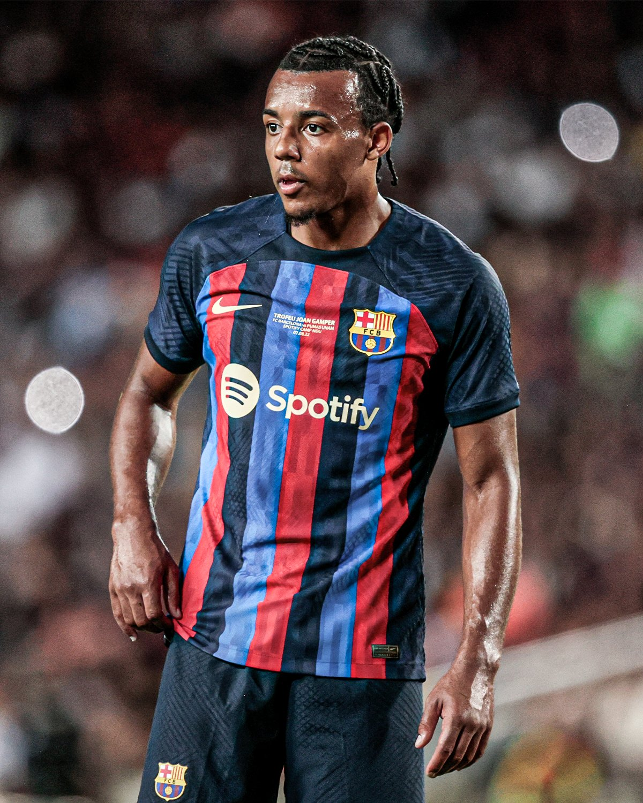

Jules Kounde
Jules Koundé urodził się 12 listopada 1998 roku w Paryżu, Francja. Jest Francuzem i środkowym obrońcą z zawodu chociaż obecnie gra po prawej stronie defensywy.
Grał w Girondins Bordeaux i Sevilli, a od 2022 roku reprezentuje barwy FC Barcelony.
